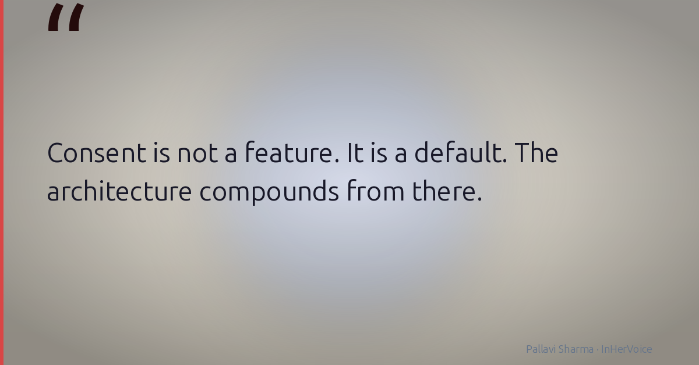
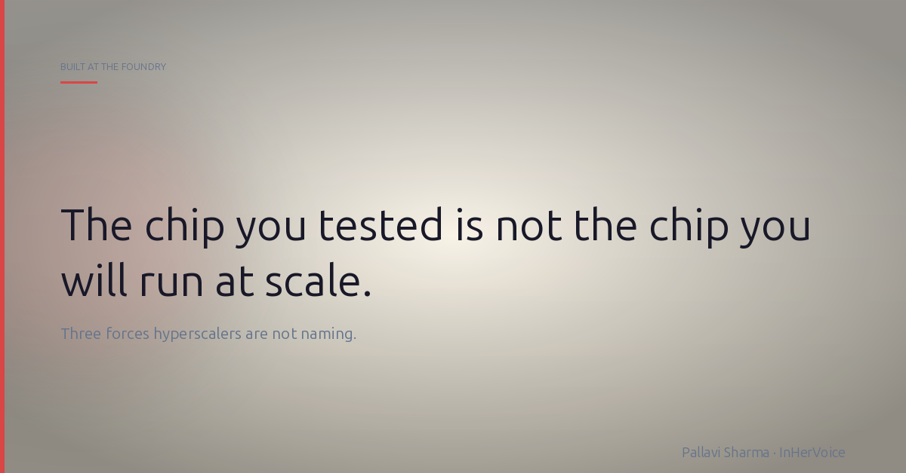
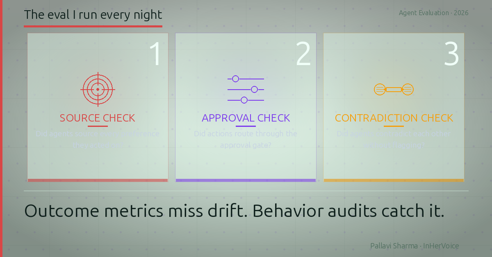

I build AI systems
that work when
the demo is over.
AI Product Lead at Amazon. Designed chips at Intel. Built cloud infrastructure at AWS. Ships agentic AI at enterprise scale. Also runs five personal AI systems — because the day job isn't enough.
production
running at home
patent
AI projects
The Arc
Three layers of the stack. One compounding discipline.
Intel Custom Foundry
Hillsboro, OR
Hardware Design Engineer → Senior Custom Engineering Lead
Designed and validated ASICs at 10–22nm. End-to-end pre-silicon architecture through physical signoff. Novel EM/IR/power methodology developed at the foundry. Customer-facing technical lead for ASIC/SoC customers including Cisco, LG, Panasonic, Sony. Enabled $12M annual foundry revenue. Reduced customer ramp-up time 33%.
Amazon Web Services
Seattle, WA
Senior PMT → Principal PMT, EC2 & SaaS Applications
Built the first guided cloud deployment platform for enterprise SAP HANA and SQL Server workloads — cut deployment time from days to hours. Invented pre-provisioning validation (US Patent US11588801B1). Shipped Fleet Manager to 40K MAU, eliminating bastion hosts and inbound ports with Just-in-Time session access. Led myApplications: AI-powered platform across 300+ AWS services.
Amazon Quick Suite
Seattle, WA
Product Lead — Embedding & Agentic AI
Launched the first cross-platform embedded agentic chat for Amazon Quick Suite. First major enterprise deployment: 130K employees at DXC Technology, integrating ServiceNow, SharePoint, and internal operational systems. Designed multi-tenant white-label embedding for ISV partners. Defined enterprise AI governance: data-boundary controls, grounding configurations, web-search policies.
Intel Custom Foundry — Hillsboro, OR
Hardware Design Engineer → Senior Custom Engineering Lead
Designed and validated ASICs at 10–22nm. Enabled $12M annual foundry revenue. Reduced customer ramp-up time 33%. Customer-facing lead for Cisco, LG, Panasonic, Sony.
Amazon Web Services — Seattle, WA
Senior PMT → Principal PMT, EC2 & SaaS Applications
Fleet Manager to 40K MAU. US Patent US11588801B1. myApplications across 300+ AWS services. Cut enterprise deployment time from days to hours.
Amazon Quick Suite — Seattle, WA
Product Lead — Embedding & Agentic AI
130K users at DXC Technology. First cross-platform embedded agentic chat. Multi-tenant white-label embedding. Enterprise AI governance framework.
Pallavi AI Labs
Personal AI systems. All live. All solving real problems. Built evenings and weekends because the day job isn't enough.
InHerVoice
AI PM Brand Builder
Multi-agent content intelligence system that turns 15 years of enterprise depth and live personal AI builds into a respected AI PM voice on LinkedIn and Substack. Three-layer intelligence: live industry signals + career experience + active lab observations.
Floppy
Family AI Concierge
Multi-agent system running daily household logistics for a working-parent family. Multi-rhythm planning (morning, 3PM, 4PM, nightly), domain-aware lookahead horizons (90 days for camps, 7 days for daily prep), dual runtime (OpenClaw production + Hermes shadow), agent society architecture. ~$40/month.
BrainSpark Academy
AI Learning Companion for Children
Tablet-first AI tutoring app. Five subjects: Math, English, French, Hindi, Spanish. Voice input and read-aloud for special needs kids. Parent dashboard with provider selection and usage controls. Built for underserved communities globally.
SignalAtlas
Decision Intelligence for Global Cities
Investment and business opportunity discovery across global cities. Opinionated product: translates city data into a city thesis, investor lens, business lens, and next-click paths — not a metrics dashboard. Multi-agent architecture for real-time signal synthesis.
Learning Brain
Local-First Personal Learning System
The saved-folder graveyard problem: we save reels, screenshots, links — and never get back to them. Learning Brain captures everything (screenshots, articles, PDFs, YouTube), builds a local knowledge graph, teaches adaptively with spaced repetition, and discovers adjacent topics you should see coming. SQLite canonical store. BM25 retrieval. Citation validation — fabricated citations are structurally impossible.
Signals from the Stack
Writing from the inside. Not commentary.
I designed chips at Intel. Then cloud at AWS. Now I ship AI agents. Here is what transfers.
Every product decision I make today, including AI systems serving 130,000 active users, still runs through the same question I asked at the chip level. Where does this fail, and who does not know it yet?
Read on LinkedIn
Six years before anyone said "AI agent identity," I shipped the fix for it to 40,000 servers
An agent that can act inside your systems is a user that never logs off. It needs the same four answers a human does: who is it, what can it touch, when does access expire, and where is the record.
Read on LinkedIn
Every hyperscaler is building their own AI chip. I designed silicon at Intel. Here is what they are really doing.
Six to nine months before any chip announcement, the customer locks allocation on the foundry's roadmap. Wafer starts, mask sets, test capacity, packaging. If your AI vendor depends on a specific GPU class, your timeline depends on a meeting you were not in.
Read on LinkedIn
Most AI tools cite their sources. I built mine so it physically can't invent one.
Every AI tool says it cites its sources. Mine cannot make one up. Not "tries not to." Cannot. The citation layer fails closed: if a quote can't be matched to something I actually saved, it never reaches me.
Read on LinkedInSignals from the Stack
The weekly Substack newsletter. Technical deep-dives behind every post.
Connect
I reply to thoughtful messages. Usually within 24 hours.
Primary writing home. 3 posts/week on enterprise AI, silicon, and personal AI systems.
Follow on LinkedInPallavi AI Labs
InHerVoice, BrainSpark, SignalAtlas, and more. Private and public repos.
View GitHub